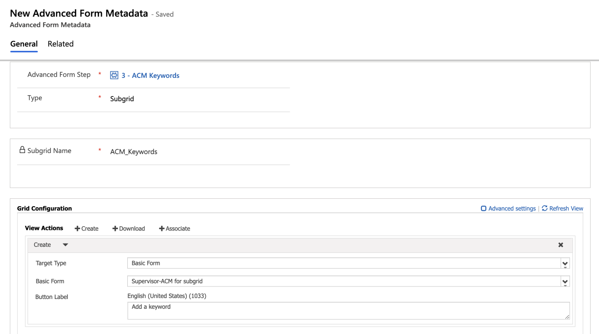
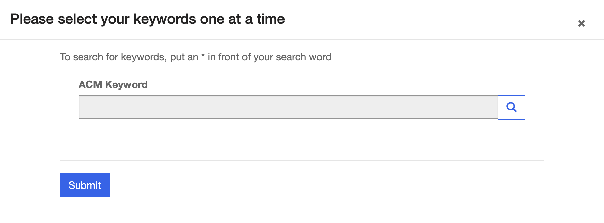
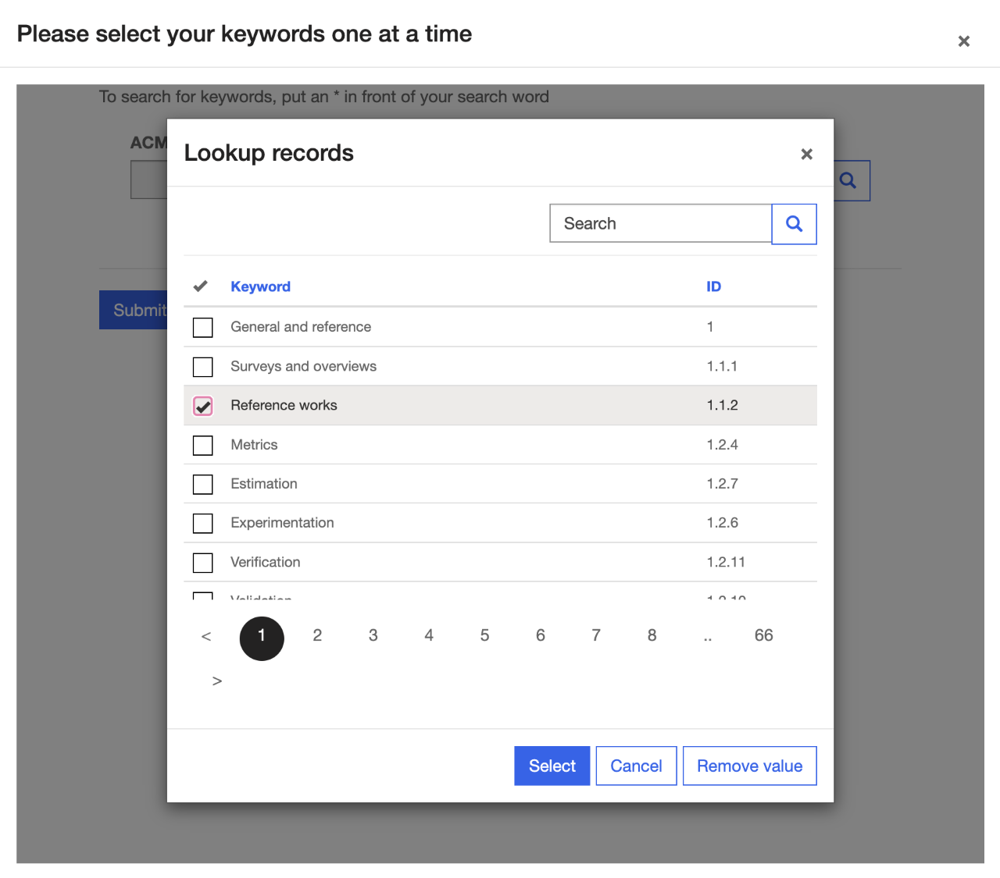
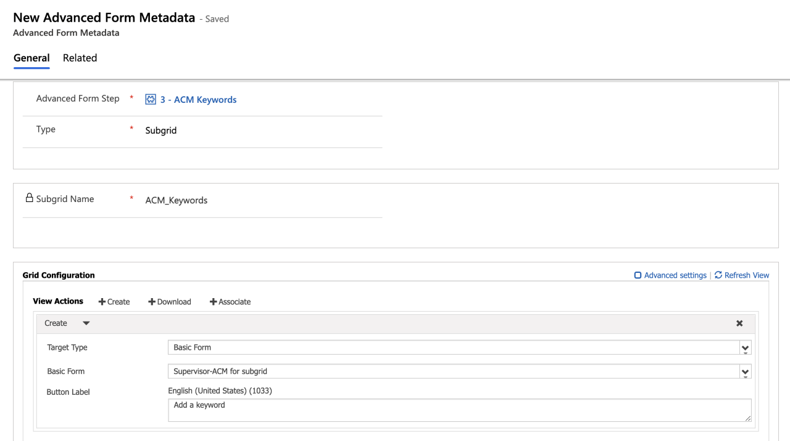
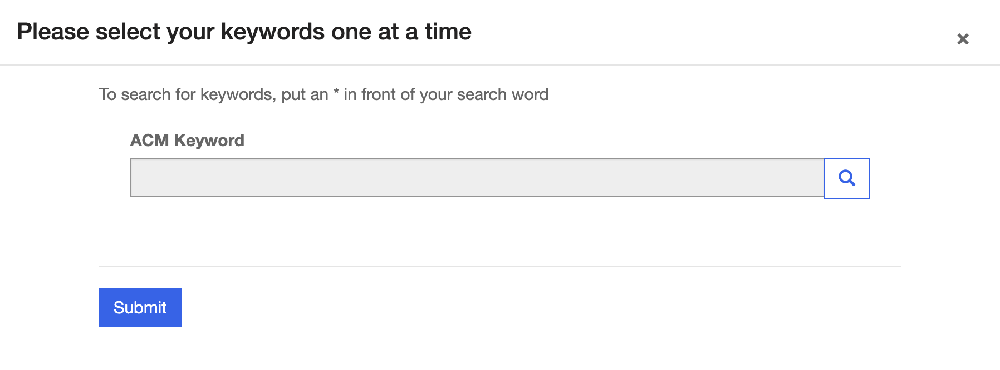
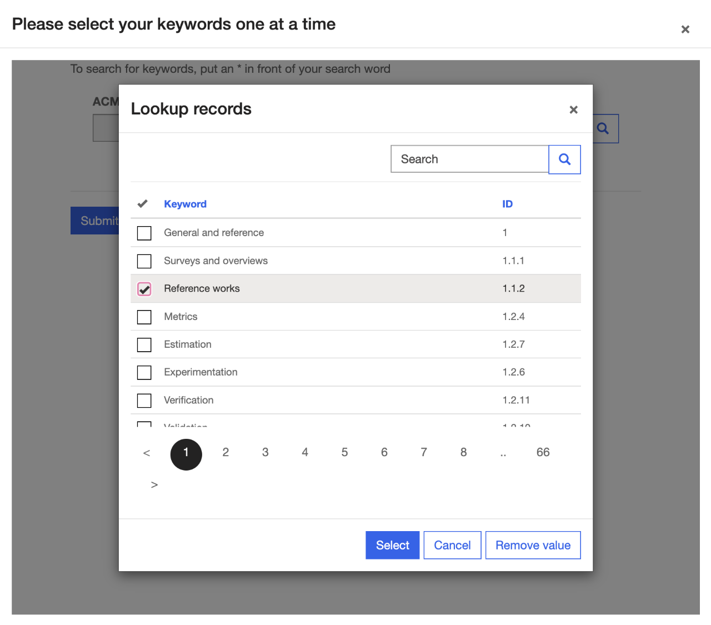

Feedback
Below is a list of issues we faced when developing our project, how we worked around them, and suggested solutions to make Microsoft PowerApps more easy to learn and use in the future.
Description:
We have a table called Supervisor Responses that holds our users’ (the supervisors’) responses to a Supervisor
Application. The Supervisor Application is an advanced form belonging to the Supervisor Responses table.
Another table called ACM Classification Codes holds records which represent keywords we want our user to select from.
They should be able to select more than one keyword.
Attempted Solution: This situation calls for a N:N relationship. We attempted to create a many-to-many relationship between Supervisor Responses and ACM Classification Codes using the built-in option (Supervisor Responses table > Relationships > Add relationship > Many-to-many; select ACM Classification Codes). This enabled us to use a subgrid in the form to enable the user to select multiple ACM keywords while filling out the form.
The issue arose when we attempted to store additional information about the relationship between Supervisor Responses and ACM Classification Codes. We also needed to store a lookup to the Contact table to be able to relate each selected ACM keyword to a specific user. We understood that when a many-to-many relationship is created in this way a hidden table is created, forming the structure: Supervisor Responses 1:N Hidden Table N:1 ACM Classification Codes.
To be able to store the extra Contact lookup column, we wanted to access the records in this hidden table and copy them into another table (along with the additional data). We were able to view the records of the hidden table using the FetchXML tool in XRMToolbox. However, when we attempted to reproduce this retrieval using an automated cloud flow, it was not possible. The List Rows step could not see the hidden table we were trying to retrieve rows from, so the FetchXML we added to that step was never run.
Workaround: We had to scrap the many-to-many relationship and create a new table called Supervisor-ACM to act in place of the hidden table. The Supervisor-ACM table has 4 columns:

As shown in the following three images, the process of selecting a keyword is lengthier and more awkward than using a subgrid with a many-to-many relationship.



This process must be repeated for each keyword, as multiple selections are not possible. When keywords are submitted (as in the previous image), a record is automatically added to the Supervisor-ACM table containing the autonumber ID, ACM Keyword, and Supervisor Response. The Contact field is also automatically populated using a flow.
Suggested Solution: I was expecting that it would be possible to use a flow to access data in hidden tables created by many-to-many relationships using a flow or otherwise. Creating custom N:N relationships should also be part of Microsoft documentation, as I found there to be little help with this process.
Attempted Solution: This situation calls for a N:N relationship. We attempted to create a many-to-many relationship between Supervisor Responses and ACM Classification Codes using the built-in option (Supervisor Responses table > Relationships > Add relationship > Many-to-many; select ACM Classification Codes). This enabled us to use a subgrid in the form to enable the user to select multiple ACM keywords while filling out the form.
The issue arose when we attempted to store additional information about the relationship between Supervisor Responses and ACM Classification Codes. We also needed to store a lookup to the Contact table to be able to relate each selected ACM keyword to a specific user. We understood that when a many-to-many relationship is created in this way a hidden table is created, forming the structure: Supervisor Responses 1:N Hidden Table N:1 ACM Classification Codes.
To be able to store the extra Contact lookup column, we wanted to access the records in this hidden table and copy them into another table (along with the additional data). We were able to view the records of the hidden table using the FetchXML tool in XRMToolbox. However, when we attempted to reproduce this retrieval using an automated cloud flow, it was not possible. The List Rows step could not see the hidden table we were trying to retrieve rows from, so the FetchXML we added to that step was never run.
Workaround: We had to scrap the many-to-many relationship and create a new table called Supervisor-ACM to act in place of the hidden table. The Supervisor-ACM table has 4 columns:
- ID (Autonumber)
- Contacts (Lookup into Contact table)
- ACM Keyword (Lookup into ACM Classification Codes)
- Supervisor Response ID (Lookup into Supervisor Responses

As shown in the following three images, the process of selecting a keyword is lengthier and more awkward than using a subgrid with a many-to-many relationship.


This process must be repeated for each keyword, as multiple selections are not possible. When keywords are submitted (as in the previous image), a record is automatically added to the Supervisor-ACM table containing the autonumber ID, ACM Keyword, and Supervisor Response. The Contact field is also automatically populated using a flow.
Suggested Solution: I was expecting that it would be possible to use a flow to access data in hidden tables created by many-to-many relationships using a flow or otherwise. Creating custom N:N relationships should also be part of Microsoft documentation, as I found there to be little help with this process.
Description: Whilst creating an advanced form with multiple tabs, I wanted to put a subgrid on the
first page of the form. When I implemented this and viewed the results on the corresponding webpage, the subgrid
did not appear on the form – the tab was empty (there were no other elements on that tab).
Workaround: The subgrid had to be moved to the second tab and the first tab was turned into an instructions page.
Suggested solution: Either it should be possible to have subgrids on the first tab of an advanced form, or it should be clearly documented on this page that subgrids cannot appear on the first tab – it took much fiddling to discover this quirk.
Workaround: The subgrid had to be moved to the second tab and the first tab was turned into an instructions page.
Suggested solution: Either it should be possible to have subgrids on the first tab of an advanced form, or it should be clearly documented on this page that subgrids cannot appear on the first tab – it took much fiddling to discover this quirk.
Description: Assume a table (called table_1) with an arbitrary number of columns, one of which is a
Lookup column (called lookup_column) to another arbitrary table. A cloud flow which uses the Dataverse step
“List rows” with an OData filter of type
lookup_column eq [arbitrary value] will produce the following error:
Could not find a property named 'lookup_column' on type 'Microsoft.Dynamics.CRM.table_1'.
Workaround: We changed the OData filter to _lookup_column_value eq [GUID]
Suggested Solution: This quirk does not necessarily need to be changed, but it should be documented that lookup columns need to be referenced in this (or another) specific way to be filtered by in PowerAutomate.
Could not find a property named 'lookup_column' on type 'Microsoft.Dynamics.CRM.table_1'.
Workaround: We changed the OData filter to _lookup_column_value eq [GUID]
Suggested Solution: This quirk does not necessarily need to be changed, but it should be documented that lookup columns need to be referenced in this (or another) specific way to be filtered by in PowerAutomate.